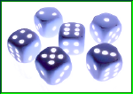

Farkle, the game of chance and luck - Help

This version of Farkle is a game of chance using a set of 6 dice. When a new game is began
(pressing the New Game button), user names are input and one of them is selected to start the
game. One to six people can play this version. If one person is playing, the game will setup a
second person and play it against the single player.
The first player will roll the dice and select the dice to keep for scoring, usually by using
the mouse and clicking on each one. The 'Keep all' button can be used to keep all of the currently
available rolled dice. See scoring combinations below. Once at least one dice is selected to keep,
the player can re-roll the remaining dice or end their turn. Note, if all dice were selected as
valid scoring dice, then re-rolling will roll all six dice again. If re-rolling all six dice and
'Strict Scoring Rules' is not checked, then the kept score is added to the users score total before
the new roll is displayed. If no dice can be selected, the player can only end their turn. The term
Farkle is used when a player has no scoring dice during a roll, hence the name of the game! If
the player has kept dice and selects End Turn, then the kept score is added to the players score.
Note, if 'Strict Scoring Rules' is checked, then a minimum of 500 points must be made for the
score to count.
Players take turn rolling and scoring until one goes over the 'Score To' amount (defaults to
10000 points). At that time, all the other players get a final turn to try to beat the first
players score. Once everyone has taken a final turn, the player with the most points is the
winner.
Scoring/Points (in a single roll):
| Roll |
Points |
Example |
| 1's |
100 each |
1 (100 points) |
| 5's |
50 each |
5 (50 points) |
| Three of a kind (1's) |
300 |
1-1-1 |
| Three of a kind (all others) |
<number> * 100 |
2-2-2 = 200, 3-3-3 = 300, etc. |
| Four of a kind (any number) |
1000 |
2-2-2-2 or 4-4-4-4, etc. |
| Five of a kind (any number) |
2000 |
2-2-2-2-2 or 6-6-6-6-6, etc. |
| Six of a kind (any number) |
3000 |
1-1-1-1-1-1 or 5-5-5-5-5-5, etc. |
| Straight (6 dice) |
1500 |
1-2-3-4-5-6 |
| 3 pair (any number) |
1500 |
2-2-3-3-6-6, etc. See options below. |
| 2 triples |
2500 |
1-1-1-4-4-4, etc. |
Game Options:
This game of Farkle has several options that can affect game play. Below is a description of
each option and its effect.
- Verbose Messages = Turns on a lot of dialogs that pop up whenever something happens.
This is off by default.
- Sounds On = Turns on/off incidental sounds used in the game. Default is on.
- Strict Scoring Rules = If on, requires a minimum of 500 points before scores can be added
to a players score. In addition, no score is added until a player ends their turn. If off,
no minimum score is required to score points, even for the initial score, and scores are
added when the all six of the dice have been selected for scoring (re-rolling will roll
six dice). This way you can keep some of your score if you push too far with rolling.
- Safe Mode = If on (checked), then the rolled dice are checked when the 'End Turn' button
is pressed if no dice have been selected for scoring. If points are found, then a prompt
is displayed confirming the player still wants to end turn. If Verbose Messages is on,
this mode is not checked since an 'end turn' message is always displayed. Having safe mode
on also prevents a player from accidentally ending their turn without rolling at all. In
addition, when safe mode is on, the kept score is checked against the score of all dice
when rolling again. If the total score is more than 200 points over the kept score, a prompt
is displayed confirming that the player wants to throw those points away.
- Count four of a kind / pair as 3 pair = If on, a four of a kind (1000 points) and a pair
(max potential of 200, if 2 1's) is counted as 3 pair (1500 points). If off, and the
pair is not 1's or 5's, then only the four of a kind will count for scoring.
- Sort Rolls = If on (checked), will display the dice rolls sorted from 1's to 6's in rolled
dice area. If not on (unchecked), then the dice are not sorted and displayed as rolled.
- Score To = Score amount that determines a win. Range can be from 1000 points to 100000
points defaulting to 10000 points. Note, less than 10000 could make a short game, while
more than around 25000 could make for a long game (depending on other options).
Keyboard Control:
This game of Farkle can be played entirely with the mouse, mouse and keyboard or just with the
keyboard. To select the first rolled or kept die, press '1'. To select the second rolled or kept
die, press '2', '3' for the third and so on up to '6'. The keyboard selection of dice does not work
if the 'ScoreTo' field is the focused/active field (accepting input).
For more information about Farkle and it's variants, see
Wikipedia Farkle.
©2009-2022 Slack & Associates / M. G. Slack